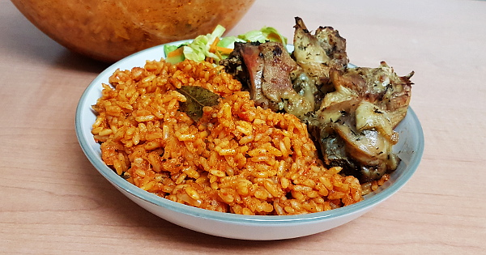

Jollof Rice

Smoky Jollof Rice
Jollof Rice is a much loved dish along the coast of West Africa
Ingredients
- 2 cups (400g) long grain parboiled rice
- 1.2kg (2.6lbs) hard chicken (hen)
- 5 plum tomatoes
- 3 tatashe peppers
- 2 onions
- A medium piece of ginger
- 1 cup (200g) tomato paste
- ½ cup vegetable oil for frying the tomatoes
- 2 Knorr cubes
- 1 habanero pepper (or to taste)
- 1 tablespoon thyme
- 2 teaspoons black pepper
- Salt (to taste)
- 1 tablespoon curry powder (Nigerian curry powder)
- 5 bay leaves (optional)
- 2 teaspoons liquid smoke
Cooking guide
prepare your Ingredients
- Blend the sweet pepper (de-seeded), tomatoes (de-seeded), Habanero pepper, half an onion (chopped) with ginger juice.
- Prepare the tomato stew. Boil the tomato puree till all the water dries up then fry with the vegetable oil and add a diluted tomato paste later and fry till all the tangy taste of tomatoes is gone.
- If you will use whole chicken then wash and cut it into pieces. Cook with the thyme, Knorr cubes, half of the black pepper, 1 onion (chopped) and the bay leaves. I use a pressure cooker to reduce the cooking time of the hard chicken. When done, grill it in an oven. You may also deep-fry it. This is to give it a golden look which is more presentable especially if you have guests for dinner.
- Parboil the rice
Steps
- Pour the chicken stock and the tomato stew into a sizeable pot and leave to boil.
- Add the drained parboiled rice, curry powder, salt, black pepper and liquid smoke. Stir. The water level should be the same level of the rice.
- Cover the pot and leave to cook on low to medium heat. This way the rice does not burn before the water dries up
- If you parboiled the rice as shown in the video below, the rice should be done by the time the water is dry. Taste to confirm
- Stir with a spatula and transfer the rice to a cool contain so it will stop cooking.